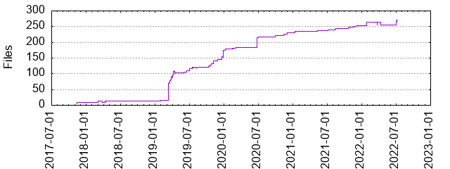

Files
- Total files
- 272
- Total lines
- 41944
- Average file size
- 22513.46 bytes

| Extension | Files (%) | Lines (%) | Lines/file |
|---|
| 82 (30.15%) | 3171 (7.56%) | 38 |
| bat | 1 (0.37%) | 104 (0.25%) | 104 |
| bzl | 38 (13.97%) | 5556 (13.25%) | 146 |
| conf | 2 (0.74%) | 8 (0.02%) | 4 |
| dos | 1 (0.37%) | 9 (0.02%) | 9 |
| golden | 3 (1.10%) | 4 (0.01%) | 1 |
| jar | 17 (6.25%) | 18459 (44.01%) | 1085 |
| java | 40 (14.71%) | 3891 (9.28%) | 97 |
| json | 14 (5.15%) | 26295 (62.69%) | 1878 |
| kt | 7 (2.57%) | 125 (0.30%) | 17 |
| md | 14 (5.15%) | 1578 (3.76%) | 112 |
| proto | 2 (0.74%) | 20 (0.05%) | 10 |
| scala | 6 (2.21%) | 109 (0.26%) | 18 |
| sh | 10 (3.68%) | 417 (0.99%) | 41 |
| tpl | 1 (0.37%) | 13 (0.03%) | 13 |
| txt | 2 (0.74%) | 34 (0.08%) | 17 |
| unix | 4 (1.47%) | 13 (0.03%) | 3 |
| xml | 26 (9.56%) | 293 (0.70%) | 11 |
| yml | 2 (0.74%) | 297 (0.71%) | 148 |